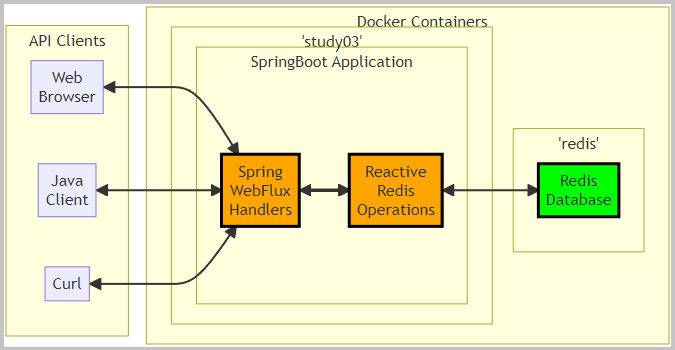
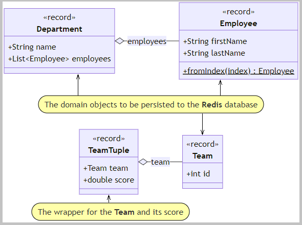
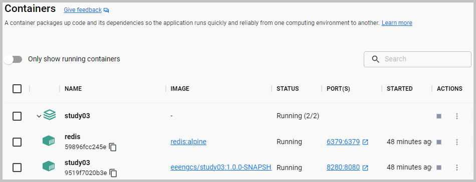
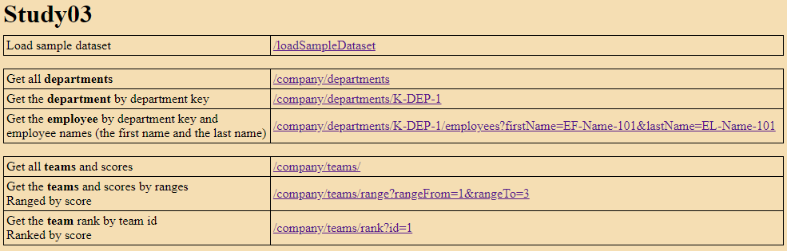
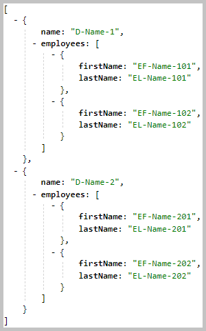
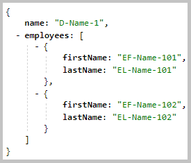
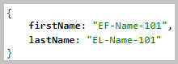
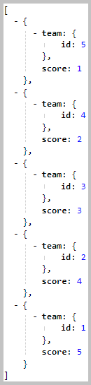
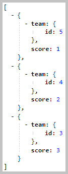

Topics: SpringBoot ● Spring WebFlux ● Reactive Streams ● Reactive REST ● Redis ● Docker ● WebTestClient
On the server-side, WebFlux supports two distinct programming models:
The project Study03 implements one of them, the "Functional Endpoints" programming model.

 The flowchart with Docker containers 'study03' and 'redis'.
The flowchart with Docker containers 'study03' and 'redis'.
Redis is an in-memory data structure store.
The screenshots from the
RedisInsight (Redis data visualizer and optimizer).
The sections of this project:
Java source code. Packages:

application sources :
kp
test sources :
kp

The domain objects class diagram.

 Java API Documentation ●
Java Test API Documentation
Java API Documentation ●
Java Test API Documentation
Action:

 1. With batch file
"01 Docker build and run.bat" build the image and
1. With batch file
"01 Docker build and run.bat" build the image and
start the container with the SpringBoot server.
1.1. Docker image is built using these files: Dockerfile and compose.yaml.

The screenshot of the created Docker containers.
Back to the top of the page
Action:
1. With the URL http://localhost:8280 open in the web browser the
home page.
2. On this
home page
select 'Load sample dataset' http://localhost:8280/loadSampleDataset.
2.1. The
home page on the Docker link: http://localhost:8280.

The screenshot of the home page.
Below are the results from some selected links on the home page.
2.2. The 'Get all departments' link: http://localhost:8280/company/departments.
The handler method:
kp.company.handlers.DepartmentHandler::handleDepartments.

The result from the 'Get all departments'.
2.3. The 'Get the department by department key' link: http://localhost:8280/company/departments/K-DEP-1.
The handler method:
kp.company.handlers.DepartmentHandler::handleDepartmentByDepartmentKey.

The result from the 'Get the department by department key'.
2.4. The 'Get the employee by department key and employee names' link: http://localhost:8280/company/departments/K-DEP-1/employees/?firstName=EF-Name-101&lastName=EL-Name-101.
The handler method:
kp.company.handlers.EmployeeHandler::handleEmployeeByDepartmentKeyAndNames.

The result from the 'Get the employee by department key and employee names'.
2.5. The 'Get all teams and scores' link: http://localhost:8280/company/teams.
The handler method:
kp.company.handlers.TeamHandler::handleTeams.

The result from the 'Get all teams and scores'.
2.6. The 'Get the teams and scores by ranges' link: http://localhost:8280/company/teams/range?rangeFrom=1&rangeTo=3.
The handler method:
kp.company.handlers.TeamHandler::handleTeamsRangeByScore.

The result from the 'Get the teams and scores by ranges'.
2.7. The 'Get the team rank by team id' link: http://localhost:8280/company/teams/rank?id=1.
The handler method:
kp.company.handlers.TeamHandler::handleTeamRankById.
The result from the 'Get the team rank by team id'.
Action:
1. With batch file
"03 MVN clean install execute client.bat" launch the Java client.
3.1. The client application
kp.client.WebClientLauncher.
The method
kp.client.WebClientLauncher::performRequests starts three subscribers:
DepartmentSubscriber,
EmployeeSubscriber,
TeamSubscriber.
The screenshot of the console log from the run of the batch file "03 MVN clean install execute client.bat"
Back to the top of the pageAction:
1. With batch file
"04 CURL call server.bat" load the sample dataset and get departments and employees.
4.1. The screenshot of the console log from the run of the batch file "04 CURL call server.bat"
Back to the top of the page{kind=link}
{kind=link}
{kind=link}